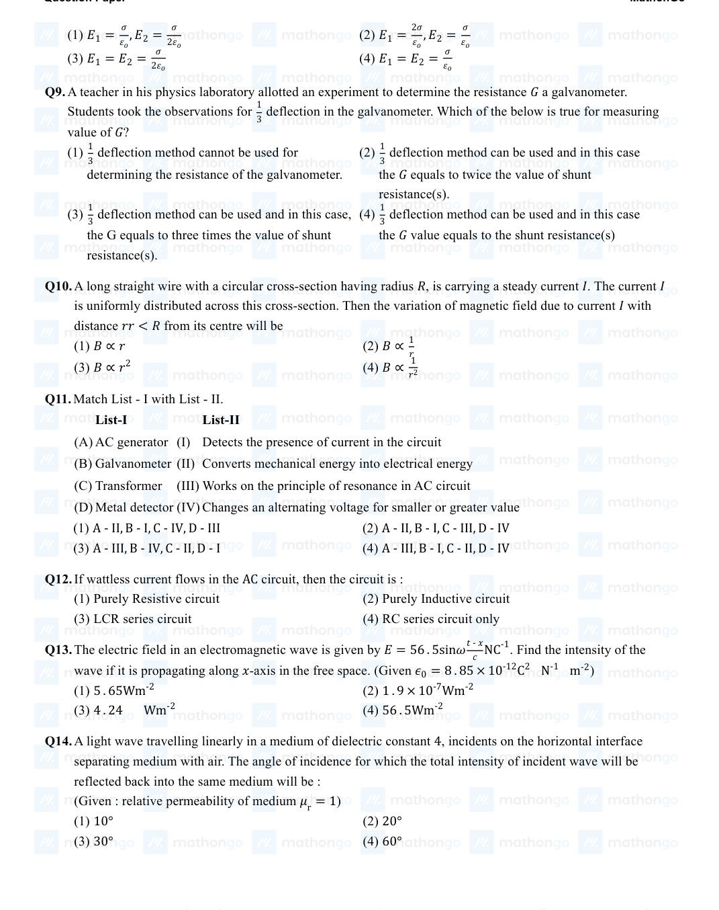

⚡ Alternating Current
62
Total Questions
5
Years
4
Clusters
Question Clusters
PHY-ALTECURR-AC_RMS_PEAK_PHASORS
Alternating Current: AC Voltage, Peak & RMS Values, Power Factor
PHY-ALTECURR-LCR_SERIES_CIRCUITS
Alternating Current: Series LCR Circuits & Impedance
PHY-ALTECURR-RESONANCE_Q_FACTOR
Alternating Current: Resonance in AC Circuits & Q-Factor
PHY-ALTECURR-TRANSFORMER
Alternating Current: Transformers & Power Transmission
Year-wise Frequency
| Year | Questions | Frequency |
|---|---|---|
| 2021 | 25 | |
| 2022 | 10 | |
| 2023 | 14 | |
| 2024 | 12 | |
| 2025 | 1 |
Questions
Showing first 50 of 62 questions.
Q13 (2021 Shift 2)
For the given circuit, comment on the type of transformer used :

PHY-2021-0101-S2-Q013
Q11 (2021 Shift 1)
In a scries LCR resonance circuit, if we change the resistance only, from a lower to higher value :
PHY-2021-0101-S1-Q011
Q12 (2021 Shift 1)
An AC source rated 220 V, 50 Hz is connected to a resistor. The time taken by the current to change from its maximum to the rms value is :
PHY-2021-0101-S1-Q012
Q14 (2021 Shift 2)
In a series LCR circuit, the inductive reactance (XL) is 10 Ω and the capacitive reactance (XC) is 4 Ω . The resistance (R) in the circuit is 6 Ω . The power factor of the circuit is : 1 1
PHY-2021-0101-S2-Q014
Q30 (2021 Shift 1)
A carrier wave VC(t) = 160 sin(2π × 106t) volts is made to vary between Vmax = 200 V and Vmin = 120 V 103t) by a message signal Vm(t) = Am sin(2π × volts. The peak voltage Am of the modulating signal is,
Answer:
40PHY-2021-0101-S1-Q030
Q17 (2021 Shift 2)
For a series LCR circuit with R = 100 Ω, L = 0. 5 mH and C = 0. 1 pF connected across 220 V −50 Hz supply, the phase angle between AC current and supplied voltage and the nature of the circuit is:
PHY-2021-0101-S2-Q017
Q26 (2021 Shift 2)
A series LCR circuit of R = 5 Ω, L = 20 mH and C = 0. 5 μF is connected across an AC supply of 250 V , having variable frequency. The power dissipated at resonance condition is ________ ×102 W.
Answer:
125PHY-2021-0101-S2-Q026
Q14 (2021 Shift 1)
Match List-I with List-II. List - I List - II 1
PHY-2021-0101-S1-Q014
Q25 (2021 Shift 1)
A common transistor radio set requires for its operation. The source is constructed by using 12 V D . C . D . C . a transformer and a rectifier circuit, which are operated at 220 V A . C . on standard domestic A . C . supply. The number of turns of secondary coil are 24, then the number of turns of primary are
Answer:
440PHY-2021-0101-S1-Q025
Q28 (2021 Shift 2)
A series LCR circuit is designed to resonate at an angular frequency ω0 = 105 rad s−1. The circuit draws 16 W power from 120 V source at resonance. The value of resistance R in the circuit is ________ Ω.
Answer:
900PHY-2021-0101-S2-Q028
Q14 (2021 Shift 1)
The angular frequency of alternating current in a L-C-R circuit is 100 rad s−1 . The components connected are shown in the figure. Find the value of inductance of the coil and capacity of condenser.
PHY-2021-0101-S1-Q014
Q19 (2021 Shift 1)
Given below are two statements: Statement I : A speech signal of 2 kHz is used to modulate a carrier signal of 1 MHz . The bandwidth requirement for the signal is 4 kHz . Statement II : The side band frequencies are 1002 kHz and 998 kHz . In the light of the above statements, choose the correct answer from the options given below:
PHY-2021-0101-S1-Q019
Q12 (2021 Shift 2)
Match List I with List II. List I List II
PHY-2021-0101-S2-Q012
Q20 (2021 Shift 1)
In amplitude modulation, the message signal 𝑉m ( 𝑡) = 10sin2𝜋× volts and carrier signal 𝑉C𝑡= 20sin2𝜋× 107𝑡 volts. The modulated signal now contains the message signal with lower side band and upper side band frequency, therefore the bandwidth of modulated signal is 𝛼 kHz. The value of 𝛼 is:
PHY-2021-0101-S1-Q020
Q30 (2021 Shift 2)
A message signal of frequency 20 kHz and peak voltage of 20 V is used to modulate a carrier wave of frequency 1 MHz and peak voltage of 20 V . The modulation index will be: Ti3+, V2+ Sc3+
Answer:
1PHY-2021-0101-S2-Q030
Q13 (2021 Shift 1)
A series LCR circuit driven by 300 V at a frequency of 50 Hz contains a resistance R = 3 kΩ , an inductor of inductive reactance XL = 250π Ω and an unknown capacitor. The value of capacitance to maximise the average power should be: (take π2 = 10)
PHY-2021-0101-S1-Q013
Q15 (2021 Shift 1)
An alternating current is given by the equation i = i1 sin ωt + i2 cos ωt . The rms current will be:
PHY-2021-0101-S1-Q015
Q27 (2021 Shift 1)
In a series LCR resonant circuit, the quality factor is measured as 100 . If the inductance is increased by two fold and resistance is decreased by two fold, then the quality factor after this change will be _______
Answer:
282.84PHY-2021-0101-S1-Q027
Q15 (2021 Shift 2)
Find the peak current and resonant frequency of the following circuit (as shown in figure).

PHY-2021-0101-S2-Q015
Q30 (2021 Shift 2)
If the highest frequency modulating a carrier is 5 kHz , then the number of AM broadcast stations accommodated in a 90 kHz bandwidth are
Answer:
9PHY-2021-0101-S2-Q030
Q3 (2021 Shift 1)
Which of the following is not a dimensionless quantity?
PHY-2021-0101-S1-Q003
Q28 (2021 Shift 1)
The alternating current is given by, i = {√42 sin( 2π T t) + 10} A . The R.M.S. value of this current is __________ A .
Answer:
11PHY-2021-0101-S1-Q028
Q27 (2021 Shift 2)
An AC circuit has an inductor and a resistor of resistance R in series, such that XL = 3R . Now, a capacitor is added in series such that XC = 2R . the ratio of the new power factor with the old power factor of the circuit is √5 : x . The value of x is
Answer:
1PHY-2021-0101-S2-Q027
Q30 (2021 Shift 1)
The amplitude of upper and lower side bands of AM wave where a carrier signal with frequency 11. 21 MHz, a b peak voltage 15 V is amplitude modulated by a 7. 7 kHz sine wave of 5 V amplitude are 10 V and 10 V respectively. Then the value of a is_____. b
Answer:
1PHY-2021-0101-S1-Q030
Q14 (2021 Shift 1)
In an ac circuit, an inductor, a capacitor and a resistor are connected in series with XL = R = XC. Impedance of this circuit is :
PHY-2021-0101-S1-Q014
Q16 (2022 Shift 1)
A resistance of 40 Ω is connected to a source of alternating current rated 220 V, 50 Hz . Find the time taken by the current to change from its maximum value to the rms value :
PHY-2022-0101-S1-Q016
Q17 (2022 Shift 2)
Given below are two statements : Statement-I: The reactance of an ac circuit is zero. It is possible that the circuit contains a capacitor and an inductor. Statement-II: In ac circuit, the average power delivered by the source never becomes zero. In the light of the above statements, choose the correct answer from the options given below
PHY-2022-0101-S2-Q017
Q11 (2022 Shift 1)
Match List - I with List - II. List-I List-II
PHY-2022-0101-S1-Q011
Q12 (2022 Shift 1)
If wattless current flows in the AC circuit, then the circuit is :

PHY-2022-0101-S1-Q012
Q13 (2022 Shift 2)
A sinusoidal voltage 𝑉𝑡= 210sin3000𝑡 volt is applied to a series LCR circuit in which 𝐿= 10 mH, 𝐶= 25 μF and 𝑅= 100Ω. The phase difference 𝛷 between the applied voltage and resultant current will be
PHY-2022-0101-S2-Q013
Q15 (2022 Shift 1)
The current flowing through an ac circuit is given by I = 5 sin(120πt) A . How long will the current take to reach the peak value starting from zero?
PHY-2022-0101-S1-Q015
Q30 (2022 Shift 1)
A telegraph line of length 100 km has a capacity of 0. 01 μF km−1 and it carries an alternating current at 0. 5 kilo cycle per second. If minimum impedance is required, then the value of the inductance that needs to be introduced in series is _____ mH . (If π = √10 )
Answer:
100PHY-2022-0101-S1-Q030
Q20 (2022 Shift 2)
Amplitude modulated wave is represented by VAM = 10[1 + 0. 4 cos(2π × 104t)] cos(2π × 107t) . The total bandwidth of the amplitude modulated wave is
PHY-2022-0101-S2-Q020
Q16 (2022 Shift 1)
For a series LCR circuit, I vs ω curve is shown
PHY-2022-0101-S1-Q016
Q20 (2022 Shift 1)
Only 2% of the optical source frequency is the available channel bandwidth for an optical communicating system operating at 1000 nm . If an audio signal requires a bandwidth of 8 kHz , how many channels can be accommodated for transmission
PHY-2022-0101-S1-Q020
Q14 (2023 Shift 1)
Match the List-I with List-II. List I List II A AC generator I Presence of both L and C B Transformer II Electromagnetic Induction C Resonance phenomenon to occur III Quality factor D Sharpness of resonance IV Mutual Inductance Choose the correct answer from the options given below:
PHY-2023-0101-S1-Q014
Q28 (2023 Shift 1)
A series LCR circuit is connected to an ac source of 220 V, 50 Hz. The circuit contain a resistance 𝑅= 100 Ω and an inductor of inductive reactance 𝑋𝐿= 79 . 6 Ω. The capacitance of the capacitor needed to maximize the average rate at which energy is supplied will be ______ μF.
Answer:
40PHY-2023-0101-S1-Q028
Q19 (2023 Shift 2)
A massage signal of frequency 3 kHz is used to modulate a carrier signal of frequency 1 . 5 MHz. The bandwidth of the amplitude modulated wave is
PHY-2023-0101-S2-Q019
Q15 (2023 Shift 1)
As per the given graph, choose the correct representation for curve 𝐴 and curve 𝐵 {Where Reactance of pure capacitive circuit connected with A.C. source 𝑋𝐶= 𝑋𝐿= Reactance of pure inductive circuit connected with A.C. source 𝑅= Impedance of pure resistive circuit connected with A.C. source Impedance of the series circuit } 𝑍= 𝐿𝐶𝑅
PHY-2023-0101-S1-Q015
Q22 (2023 Shift 1)
Given below are two statements: Statement I : When the frequency of an AC source in a series LCR circuit increases, the current in the circuit first increases, attains a maximum value and then decreases. Statement II : In a series LCR circuit, the value of power factor at resonance is one. In the light of given statements, choose the most appropriate answer from the options given below. (1) Statement I is incorrect but Statement II is true (2) Both Statement I and Statement II are false (3) Both Statement I and Statement II are true (4) Statement I is correct but Statement II is false
Answer:
2PHY-2023-0101-S1-Q022
Q14 (2023 Shift 2)
Given below are two statements: Statement I : An AC circuit undergoes electrical resonance if it contains either a capacitor or an inductor. Statement II: An AC circuit containing a pure capacitor or a pure inductor consumes high power due to its non- zero power factor. In the light of above statements, choose the correct answer from the options given below:
PHY-2023-0101-S2-Q014
Q28 (2023 Shift 1)
In the circuit shown in the figure, the ratio of the quality factor and the band width is _____ s.

Answer:
10PHY-2023-0101-S1-Q028
Q21 (2023 Shift 1)
In an LC oscillator, if values of inductance and capacitance become twice and eight times, respectively, then the resonant frequency of oscillator becomes x times its initial resonant frequency ω0 . The value of x is: (1) (2) 1/4 16 (3) 1/16 (4) 4

Answer:
4PHY-2023-0101-S1-Q021
Q30 (2023 Shift 1)
A message signal of frequency 5 kHz is used to modulate a carrier signal of frequency 2 MHz . The bandwidth for amplitude modulation is: (1) 5 kHz (2) 20 kHz (3) (4) 10 kHz 2. 5 kHz
Answer:
27PHY-2023-0101-S1-Q030
Q24 (2023 Shift 2)
A series LCR circuit is connected to an AC source of 220 V , 50 Hz . The circuit contains a resistance R = 80 Ω , an inductor of inductive reactance XL = 70 Ω , and a capacitor of capacitive reactance XC = 130 Ω . The power factor of circuit is x . The value of x is: 10
Answer:
1PHY-2023-0101-S2-Q024
Q21 (2023 Shift 2)
For the given figures, choose the correct options: (1) The rms current in circuit (b) can never be larger (2) The rms current in figure (a) is always equal to than that in (a) that in figure (b) (3) The rms current in circuit (b) can be larger than (4) At resonance, current in (b) is less than that in (a) that in (a)
Answer:
41PHY-2023-0101-S2-Q021
Q29 (2023 Shift 2)
The modulation index for an A.M. wave having maximum and minimum peak to peak voltages of 14 mV and 6 mV respectively is : (1) 1. 4 (2) 0. 4 (3) (4) 0. 2 0. 6

Answer:
7PHY-2023-0101-S2-Q029
Q1 (2023 Shift 1)
If 𝑅, 𝑋𝐿 and 𝑋𝐶 represent resistance, inductive reactance and capacitive reactance. Then which of the following is dimensionless:
PHY-2023-0101-S1-Q001
Q22 (2023 Shift 2)
A series LCR circuit consists of R = 80 Ω . XL = 100 Ω , and XC = 40 Ω . The input voltage is 2500 cos(100πt) V . The amplitude of current, in the circuit, is _____ A .
Answer:
5PHY-2023-0101-S2-Q022
Q15 (2024 Shift 1)
In series LCR circuit, the capacitance is changed from 𝐶 to 4𝐶. To keep the resonance frequency unchanged, the new inductance should be :
PHY-2024-0101-S1-Q015